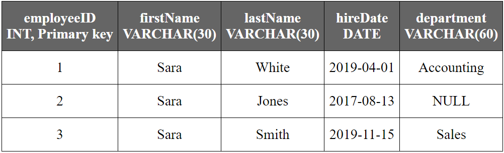

A database is build from tables. A database without tables is useless, not only there is no data, but there is no place to put data in. This is a tutorial chapter, which means that you'll touch a lot of subjects on the surface and not deep enough, to avoid confusion, just assume that this is more like a guided tour of the basics, I don't expect that you understand everything on this chapter, but I hope to give you a wide view of what the job asks from you. And for you to see what the database business is about.
I'm using MariaDB as the database engine, some of these examples may differ depending on the database engine or the version. The source code on this book should work the same in MySQl, most of the exercises are done in standard SQL which means that you can use the source code as is, in standard SQL database engines.
The installation of a specific database engine is outside the scope of this book, however here is a YouTube video that I recorded with installation instructions to install MariaDB on Windows 10. You don't have to open that link on your eReader but you are welcome to try.
YouTube: How to install MariaDB on Windows 10.There are plenty of tutorial and videos on whatever database engine you decide to use. This book is written as a guide for SQL databases and most examples are done using standard SQL in order to allow you to use this knowledge on whatever database engine you use.
I'm assuming that you already installed a database engine and that you can actually run queries on it.
Before creating a table and making queries, you need to create an actual database. For this chapter, we are creating a database for a human resources department. Most of the time, you'll receive a document called technical requirements this document may say something like this:
"The company requires to store information about it's employees and departments. We need to store their names, hire dates and the department they belong to..."
During this first chapter you'll learn what most programmers know, regarding database design and modeling. The good news is that after reading this, you are pretty much in line with what most people already know about databases, the bad news is that this knowledge is incomplete and leads to a painful path. Believe it or not, this is what most people work with:
To create a database you need to run this command on the database engine:
CREATE DATABASE human_resources;
You can replace "human_resources" with whatever database name you want. The naming conventions I use are snake_case where all words are lower cased and I use underscore instead of spaces. I don't type "human_resources_database" because it's implied that all databases are just that, databases. So I don't need to write the word database on every database I create.
If recommend that you save these commands into a text file for easy replication. Text files with SQL queries are called scripts. You can name your scripts with the SQL extension to allow your file system to locate the recommended software to use in order to open these files.
Example SQL script names:
Whatever naming conventions you use, just remember to be consistent.
If you try to execute the same command again, the database engine may tell you that there was an Error: The human_resources database already exists.
While learning, it's common that you'll need to recreate your databases from scratch or create them using a SQL script file. In order to delete (drop) the human_resources database and create it anew, use this command:
CREATE OR REPLACE DATABASE human_resources;
This command will create the "human_resources" database, if it already exist, it will delete it and create a new one without any tables or data.
The database you just created is empty, there is no data and there is no place to put the data into. In order to put data into a database we need to create tables, inside that database. Before doing anything else, we need to open the database in order to execute more queries (instructions for the database engine to execute).
To open the "human_resources" database, execute this command:
USE human_resources;
Now you can execute queries upon the "human_resources" database. Next we need to create a place to put data into, let's create a table.
If we recall the requirements for this database, we get this:
"The company requires to store information about it's employees and departments. We need to store their names, hire dates and the department they belong to..."
With so little information be sure that whatever design you do at this time, it's going to get changed in the future, don't feel mad or frustrated, that's just how it is. But we are going to be working to get to the best version of the database as soon as possible.
The first thing to identify is the actual requirements to meet. After reading the requirements you can see that the database should be able to store these data:
A word that we read here a lot in there it's employee. So It's natural that our table name is just that: "employee", I name tables in singular not plural and I use the camelCase, naming convention. That means that the first letter of the name is lower case and instead of space, I join all the words and make a separation using a upper case letter, for example: firstName, employeeNorthOffice, employeeSalary, etc.
Our table's name it's "employee"
Next we need to add fields to insert our data into, my first proposal would be these fields:
Simple. Yet in the case of people's names, it's often required to store them in two fields: first name and last name, this allows you to search employees by last name or first name, also allows you to order these records using last names, quite useful on a lot of circumstances. So the proposed table fields would end like this:
Fields on a table must be declared of a certain data type, on databases, data types are used to impose rules and restrictions on the data to be stored. Depending of the type of data to be stored, you should chose a field data type.
For example, for the firstName and lastName fields we may use varchar data type, this is the data type used for text data, for the hireDate we may use a date data type. Notice that in the case of varchar, we may need to define how many characters are we allowed to store on that single field. Here is a list of the data types that we are going to use on this table on MariaDB:
For a detailed list of the data types supported by MariaDB visit: Data Types - MariaDB Knowledge Base
If you are using another database engine, please look for your database documentation on the Internet.
In our case, our employee table would have these fields:
So were does INTEGER come into play? We missed an important field that does not come defined in the technical requirements, that's the concept of the primary key. A primary key, also called a primary keyword, is a key in a relational database that is unique for each record. This value helps identifying a single record as unique on the entire table. In our case, we will create a primary key of type INTEGER. Since this field is artificial, which means that it's not part of the actual data required.
So we create a field called employeeID this field will store an INTEGER number and it will be auto incremented field, this means that the number it's introduced by the database engine itself in order to avoid duplication and ensure the value it's unique for the entire table.
So we end up with this list of fields for the employee table:
To visualize the employee, table we may represent it like a spreadsheet:

| employeeID INT, Primary key |
firstName VARCHAR(30) |
lastName VARCHAR(30) |
hireDate DATE |
department VARCHAR(60) |
|---|---|---|---|---|
| 1 | Josh | Smith | 1/5/2019 | Accounting |
| 2 | Adam | Black | 23/7/2018 | Human resources |
| 3 | Jessica | White | 1/9/2015 | Accounting |
| 4 | James | Stuart | 20/3/2017 | Sales |
| 5 | Jessica | White | 27/10/2019 | Sales |
So after all, it's time to actually code the table in SQL. Let's see the command to create the employee table then examine it to understand the details.
CREATE OR REPLACE TABLE employee (
employeeID INTEGER NOT NULL AUTO_INCREMENT,
firstName VARCHAR(30),
lastName VARCHAR(30),
hireDate DATE,
department VARCHAR(60),
CONSTRAINT employee_pk PRIMARY KEY (employeeID));
Now that's a mouthful. Lets divide and conquer this query by focusing on the first line:
CREATE OR REPLACE TABLE employee (
-- Code elided for clarity...
Similar to CREATE OR REPLACE DATABASE, we create the employee table and if it already exists, we replace it with a new version of it.
⚠
WARNING: This will delete the entire table and all it's data.
Next we create the actual fields of the employee table, the first and more important is the primary key we define it like this:
CREATE OR REPLACE TABLE employee (
employeeID INTEGER NOT NULL AUTO_INCREMENT,
-- Code elided for clarity...
The second line creates the employeeID field, the INTEGER keyword means that the field it's an integer number, NOT NULL means that this field may never be empty (NULL) when inserting or updating a record, it must always have a valid value, AUTO_INCREMENT means that if there is no value set for the new record or during and update for the record, the database engine will provide a valid auto numeric value to the field. This means that you just don't need to add a value to this field during an insert or update operation, the database engine already knows what to do. We'll see this in action on the next section.
CREATE OR REPLACE TABLE employee (
employeeID INTEGER NOT NULL AUTO_INCREMENT,
firstName VARCHAR(30),
lastName VARCHAR(30),
hireDate DATE,
department VARCHAR(60),
-- Code elided for clarity...
In a similar fashion, we add the fields that are actually required: firstName, lastName, hireDate and department. These fields have their data types defined after their names, remember to follow these field declarations with a coma (,) in order to separate the fields from one another and avoid execution errors.
CREATE OR REPLACE TABLE employee (
employeeID INTEGER NOT NULL AUTO_INCREMENT,
-- Code elided for clarity...
CONSTRAINT employee_pk PRIMARY KEY (employeeID));
Finally the last line defines the CONSTRAINT for the primary key. All primary keys are indexed, this means that a space in the database is dedicated to store not just the primary key itself, but the actual record in a index table that allows the database to locate an specific record quickly using the employeeID field as reference. We'll take a deep look at indexes in the future.
The employee_pk keyword stands for employee primary key this is a unique name for this specific index in the entire database.
The PRIMARY KEY (employeeID)); code is used to select which field is to be taken into consideration as the primary key, in this case that's employeeID. This must be considered as part of the primary key, just as the field definition on line two.
Finally we review the code for creating the employee table.
CREATE OR REPLACE TABLE employee (
employeeID INTEGER NOT NULL AUTO_INCREMENT,
firstName VARCHAR(30),
lastName VARCHAR(30),
hireDate DATE,
department VARCHAR(60),
CONSTRAINT employee_pk PRIMARY KEY (employeeID));
Note that there is no data on the employee table yet, we only created an empty table to be able to store the data into. Next we'll populate our table with actual data.
This was the hard part, create the database, then create a table. Working with data is 90% of the job, and it's the easiest part of the job. Most database administrators don't spend their time designing and modeling databases, these were created long ago most of the time and you just need to focus on getting data from the database and presenting information in a meaningful manner.
Now that you have the where to put data into, let's just do that. Data is inserted in the employee table in a record.
A record in a database is an object that can contain one more values. Groups of records are then saved in a table; the table defines the data that each record may contain. In a given database, there are multiple tables, each containing multiple records. Think of the rows and columns of a typical spreadsheet.1
Lets insert a new employee:
The employee table have these fields:
So the data for those fields should be these:
To insert Jessica White as a new employee at the employee table, execute this command:
INSERT INTO employee VALUES (DEFAULT, 'Jessica', 'White', '2019-04-01', 'Accounting');
This is the syntax to insert a new record when you already know the order of the fields on the employee table. If you read the values between the parenthesis, you'll realize that those values are in a proper order.
The DEFAULT keyword means that on the first field (employeeID) it's going to insert whatever default value it's assigned for this record, the database engine will pick the next unused value from the AUTO_INCREMENT property and use that value. Don't insert an actual value there unless you know what you are doing, just let the database engine do it's job.
Sometimes you don't have all the values or some of the record's values are unknown, in this case we use the NULL keyword in order to tell the database engine that we don't know that value for the record.
For example, assume we want to insert another employee, but this time we don't know what department he is going to be working for. So the department field is unknown. In this case we use this command:
INSERT INTO employee VALUES (DEFAULT, 'Walter', 'Jones', '2017-08-13', NULL);
In the future, you'll create fields that have the property NOT NULL like the primary key, if a field is marked as NOT NULL, then you either insert the value yourself or the database engine may do so via AUTO_INCREMENT or by DEFAULT value.
DEFAULT values, in the context of databases, are preset values defined for a column type. Default values are used when many records hold similar data.2
When you insert data into a table, the table itself may have a lot of fields or the actual values that you are inserting at a time may be incomplete. In this case, you may choose what fields to insert and ignore the others. To insert a new record on the employee table, use this command:
INSERT INTO employee
(firstName, lastName, department)
VALUES
('Walter', 'Jones', 'Sales');
This time you choose to insert a new record with only the name of the employee and it's department name. In tables with a lot of fields, this may come in handy.
So what happens with the rest of the fields? in this case they get NULL instead of an actual value. But that's not the behavior that may fit every situation, you may like to set a DEFAULT value for certain fields, for example the hireDate field may have a default value of the current date in the case that none is provided. During the table creation you may set this DEFAULT value with the use of a now() function like this:
CREATE OR REPLACE TABLE employee (
employeeID INTEGER NOT NULL AUTO_INCREMENT,
firstName VARCHAR(30),
lastName VARCHAR(30),
hireDate DATE DEFAULT NOW(),
department VARCHAR(60),
CONSTRAINT employee_pk PRIMARY KEY (employeeID));
In this version of the employee table, if no hireDate is inserted with the record, the database engine will provide one itself. This DEFAULT value is the result of the function NOW() this function returns the current date and time, in this example, the hireDate field it's a DATE data type, so the NOW() function return a DATE value, this means that the time part it's removed and only the date part is stored in the hireDate field.
If you already have a table with data that you don't want to delete, I recommend reading the Alter table section on this chapter, instead of replacing the employee table and start from scratch.
Now that you have the means to create a table and inserting records on a table, we now face the issue of listing records or selecting them. We may use this command to select all records from the employee table:
SELECT * FROM employee;
After executing the SELECT statement, you'll get a list similar to this:
| employeeID INT, Primary key |
firstName VARCHAR(30) |
lastName VARCHAR(30) |
hireDate DATE |
department VARCHAR(60) |
|---|---|---|---|---|
| 1 | Jessica | White | 2019-04-01 | Accounting |
| 2 | Walter | Jones | 2017-08-13 | NULL |
| 3 | Monica | Smith | 2019-11-15 | Sales |
Most of the time a SELECT ALL RECORDS is not the best strategy, specially if you are working with a large dataset, a table with millions of records may prove to be hard to use, so filtering the results is in order. Filtering results can be achieve with the WHERE clause, this clause is used like this:
SELECT *
FROM employee
WHERE employeeID = 1;
In this example, you are getting all records WHERE the employeeID is equal to '1'. In this case there is only one record:
| employeeID INT, Primary key |
firstName VARCHAR(30) |
lastName VARCHAR(30) |
hireDate DATE |
department VARCHAR(60) |
|---|---|---|---|---|
| 1 | Jessica | White | 2019-04-01 | Accounting |
In later chapters we'll get a lot more practical examples. Since selecting data it's the most used SQL statement by far, let's make some more examples.
If you want to select all employees that belong to the "Sales" department:
SELECT *
FROM employee
WHERE department = 'Sales';
If you want to select all employees that have not yet being assigned a department:
SELECT *
FROM employee
WHERE department IS NOT NULL;
If you want to select all employees that their "last name" is "Jones":
SELECT *
FROM employee
WHERE lastName = 'Jones';
If you want to select all employees hired between 2018 and 2019 :
SELECT *
FROM employee
WHERE hireDate BETWEEN '2018-01-01' AND '2020-01-01';
In this example, '2020-01-01' it's used instead of '2019-12-31' because the end date starts at the zero hour of such date. So, if '2019-12-31' is used, the last day of 2019 will not be taken into consideration.
Now we are entering the danger zone. Inserting new data is not such a big deal compared to updating such data. Many times, the need to change anything will come and the feeling of dread will come along. Modifying something that has been there for years may sound like a daunting task, so let me show you the command that creates a lot of painful moments in the life of a database administrator:
UPDATE employee SET firstName = 'Sara';
At first glance this command just changes someone's first name to 'Sara', but who's name is going to get changed? That's the issue, everyone's first name it's now 'Sara'.
| employeeID INT, Primary key |
firstName VARCHAR(30) |
lastName VARCHAR(30) |
hireDate DATE |
department VARCHAR(60) |
|---|---|---|---|---|
| 1 | Sara | White | 2019-04-01 | Accounting |
| 2 | Sara | Jones | 2017-08-13 | NULL |
| 3 | Sara | Smith | 2019-11-15 | Sales |
This happens often, that you execute an UPDATE statement without a WHERE clause. So it's important to add a filter just like in the SELECT statement, just that in this case is more important. And there is no CTRL-Z or undo function here, at least not in standard SQL, so having a filter in this statement is a must most of the time. If you screw up here, you better have a backup at hand.
The syntax for the UPDATE statement it's pretty straight forward:
UPDATE table_name
SET
column1 = value1,
column2 = value2, ...
WHERE condition;
Some common examples include:
Update the hire date of Jessica White to today's date:
UPDATE employee
SET
hireDate = NOW()
WHERE
employeeID = 1; -- Jessica White's employeeID number
In this example, you rather use the employeeID number instead of the employee's actual name, if there is more than one Jessica White, both are going to get affected. In most update operations that handle single record updates, the use of the primary key is crucial to select just the desired record.
Set Walter Jones's department to 'Human resources' and his hire date to today's date:
UPDATE employee
SET
department = 'Human resources',
hireDate = NOW()
WHERE
employeeID = 2; -- Walter Jones's employeeID number
This time, we updated two fields at the same time. We can update more than a single field on every update operation. This is really useful when handling several data updates for a single record.
Change Monica Smith's name to 'Sara' Smith:
UPDATE employee
SET
firstName = 'Sara'
WHERE
firstName = 'Monica'
AND
lastName = 'Smith';
I don't recommend to use actual names to look for specific records, so this example is merely academic. On the other hand, you can use an AND keyword to specify two or even more conditions to be meet in order to execute the update statement. In later chapters, you'll get to use more sophisticated queries that use this and other keywords like OR and NOT, in the mean time we are getting started with simple examples.
⚠
Deleting records it's a dangerous business, just like the UPDATE statement, you need to think carefully before executing a DELETE statement without a WHERE clause.
Deleting an entire table on a production environment means that the system can go down for the day or even worse. Not having a backup of the deleted data it's more than enough for people to lose their jobs, so be careful.
The syntax for the DELETE statement it's as follows:
DELETE FROM table_name WHERE condition;
As mention before, including a condition it's highly recommended unless you want to just delete the entire data from a table. Let's see some examples.
To delete all employees where the department it's unknown or it's missing, you can't evaluate a NULL against True or False or any other value, you need to use the IS NULL statement inside the WHERE clause like this:
DELETE FROM employee WHERE department IS NULL;
This deletes records on the employee table that don't have an actual value at the department field. The NULL keyword it's used to refer to a missing piece of data or unknown data, it should never be used to represent an empty data like a numeric zero or an empty string.
Most of the time, you will delete a single record, just like the UPDATE statement, you'll use the WHERE clause to choose which one record to delete in this case, we use the employeeID field in order to do the delete:
DELETE FROM employee WHERE employeeID = 1;
Since the employeeID is unique, there is only one record with such value, so only one record is deleted. Again a word of caution. Delete records is a very dangerous thing to execute on a production environment. I recommend executing a SELECT statement with the WHERE clause that's supposed to be used by the DELETE statement, that way you'll know if you are actually deleting the desired records.
During software development, specially on the Agile methodologies, it's very common to have changes to the database structure. Inserting and deleting records is one thing, changing the structure or one or several tables is another.
Why would you need to change the structure a table? After all you design the database in such a way that the initial requirements are meet. And that may be true, yet initial requirements are just that, initial. Requirement's change and so the original design becomes obsolete. This is a good sigh. It means that it evolves for the better. The software initial solution gives life to new improvements or functionality.
Let's see an example.
Remember that your employee table, have these fields:
To visualize the employee table, we may represent it like a spreadsheet:
| employeeID INT, Primary key |
firstName VARCHAR(30) |
lastName VARCHAR(30) |
hireDate DATE |
department VARCHAR(60) |
|---|---|---|---|---|
| 1 | Josh | Smith | 1/5/2019 | Accounting |
| 2 | Adam | Black | 23/7/2018 | Human resources |
| 3 | Jessica | White | 1/9/2015 | Accounting |
| 4 | James | Stuart | 20/3/2017 | Sales |
| 5 | Jessica | White | 27/10/2019 | Sales |
And after a week you are asked to include the salary of every employee as a new field for the employee table. This requires you to add a new field on the table.
To add a salary field to the employee table, you need to choose data type for the new field. In this case, to represent money we'll use DECIMAL data type, for MariaDB. This data type, requires you to define the total number of digits (the precision) and the number of digits after the decimal point (the scale). Like this: DECIMAL(13,2)
If we want to add a salary field to the employee table we would use this command:
ALTER TABLE employee
ADD salary DECIMAL(13, 2) DEFAULT 0.0;
After executing this command, your table will have a new field with a default value of zero. You can see the new field with the default value of 0.0 (decimal) on the table like this:
| employeeID INT, Primary key |
firstName VARCHAR(30) |
lastName VARCHAR(30) |
hireDate DATE |
department VARCHAR(60) |
salary DECIMAL(13, 2) |
|---|---|---|---|---|---|
| 1 | Josh | Smith | 1/5/2019 | Accounting | 0.0 |
| 2 | Adam | Black | 23/7/2018 | Human resources | 0.0 |
| 3 | Jessica | White | 1/9/2015 | Accounting | 0.0 |
| 4 | James | Stuart | 20/3/2017 | Sales | 0.0 |
| 5 | Jessica | White | 27/10/2019 | Sales | 0.0 |
Adding fields to an existing table is one of the most common altering commands that you'll ever face.
The alter command can be used to delete a field, yet this operation requires extreme caution if used on a table with actual data on the field that you desire to delete.
An example for removing the recently created salary field, you would use this command:
ALTER TABLE employee DROP IF EXISTS salary;
Note that if you are dropping a field, all data in that field is lost, so be careful.
Why would you like to delete a table? Maybe you just imported data from a spreadsheet or a text file and everything landed on a temporary import table, after moving that data to it's final destination table, you may need to delete the temporary table afterwards.
Another reason may be that you just created a test table to try out things or experiment with data types. Whatever the reason may be, you can DROP a table to delete it and all it's data with this command:
-- Standard SQL
DROP table_name;
-- MariaDB/MySQL allows IF EXISTS clause
DROP TABLE IF EXISTS table_name;
If you want to drop the employee table, you can use this command:
-- Standard SQL
DROP employee;
-- MariaDB/MySQL allows IF EXISTS clause
DROP TABLE IF EXISTS employee;
If you drop a table, remember that all data is lost along with that table's structure. There are techniques that you can use to keep a backup of the data using the database engine backup utilities and you may also develop a work around to ensure that the data and the table you are deleting is not harmful.
This is what most software developers work with in their projects. This is an incomplete information about databases and it's fundamentals. I invite you to read on to the complete book in order to come out of this hole and grow into a proper database administrator.